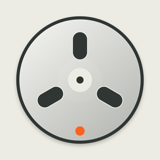

RecNotes
Support & privacy
A little help with your recordings.
RecNotes is a free iPhone audio recorder by Steingrím Ósá. Record sounds, name cue markers, and turn the reel to find the moment you want to hear.
steingrimosa@gmail.com
Record and save
Tap the orange record button and allow microphone access. Tap Stop to save. New recordings use compact AAC (.m4a) audio. Older WAV recordings still play.
Find and organize
Open Tapes to choose a recording, rename it, share it, or delete it. Tap CUE to mark and name the current position. Open CUES beside Tapes to revisit, rename, or remove markers.
Find your files
Recordings are stored on your iPhone. Open Files → On My iPhone → RecNotes, or use Share in Tapes to save a copy elsewhere. Removing the app also removes its local recordings. Export anything you want to keep first.
Wheel and vibration
Turn the reel to hear short previews while seeking. Adjust vibration strength in Settings. Vibration requires a supported iPhone and is disabled while recording.
Microphone not working?
Check the microphone permission for RecNotes in iPhone Settings. If you contact support, include your iPhone model, iOS version, and what happened. You do not need to send your recordings.